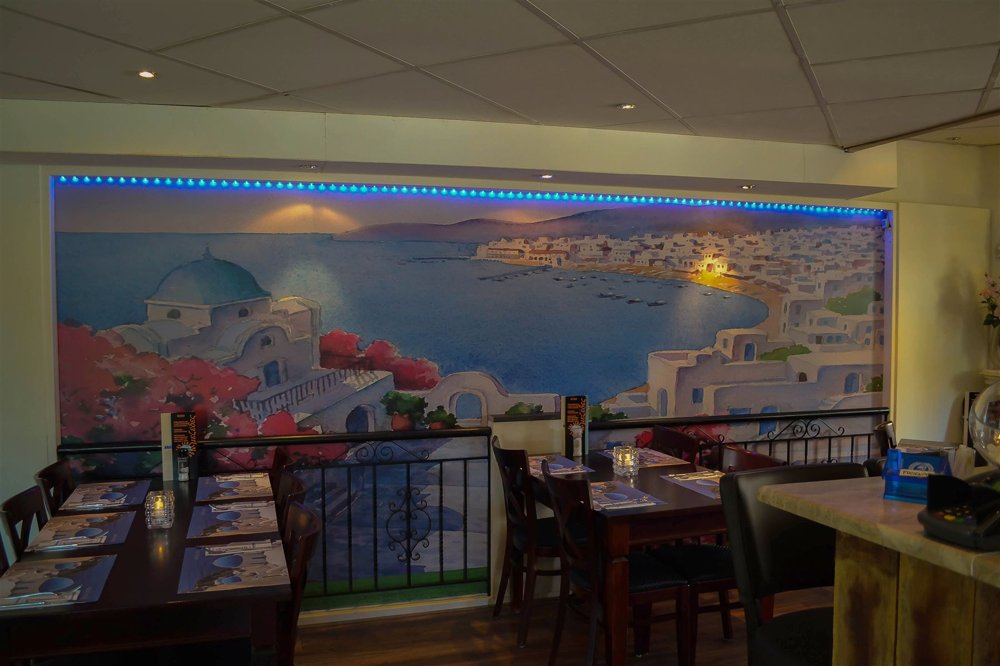
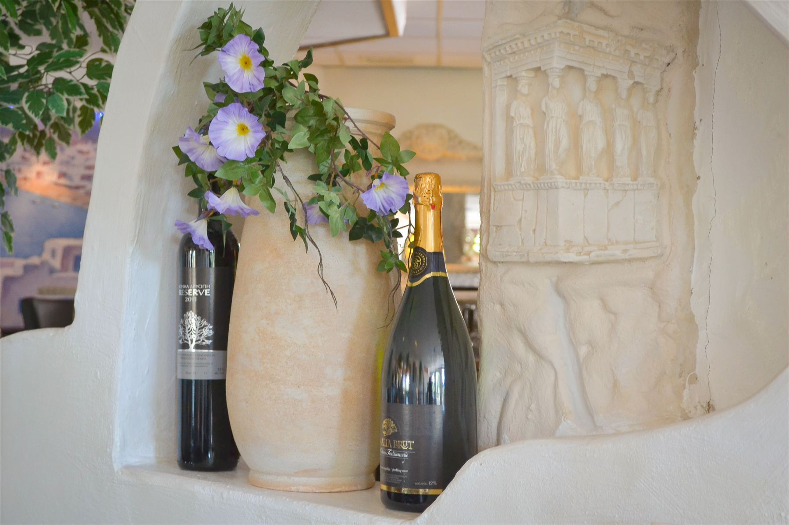
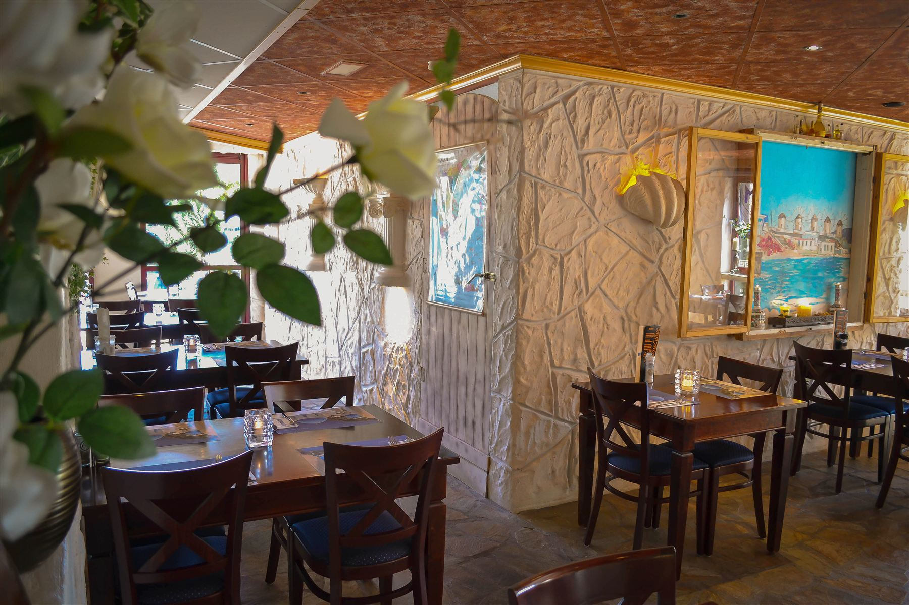
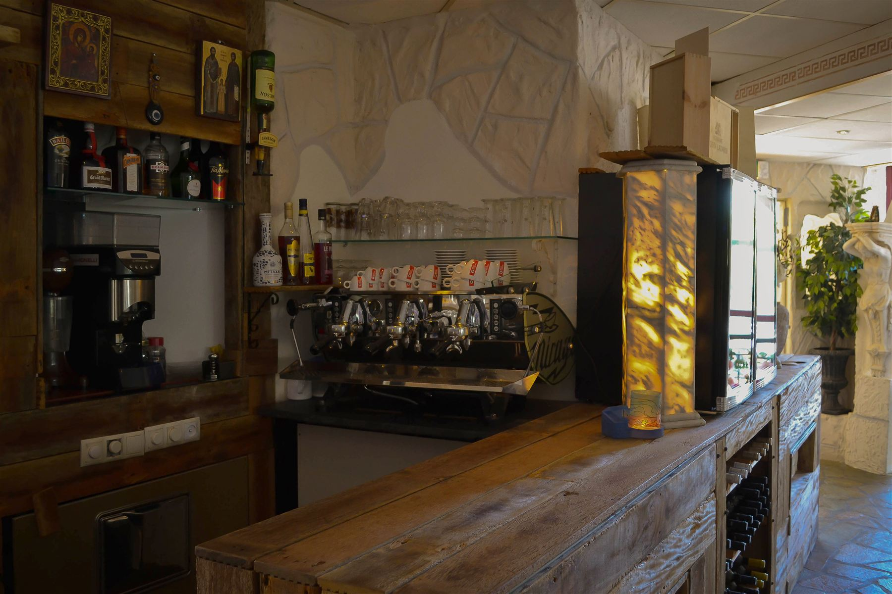
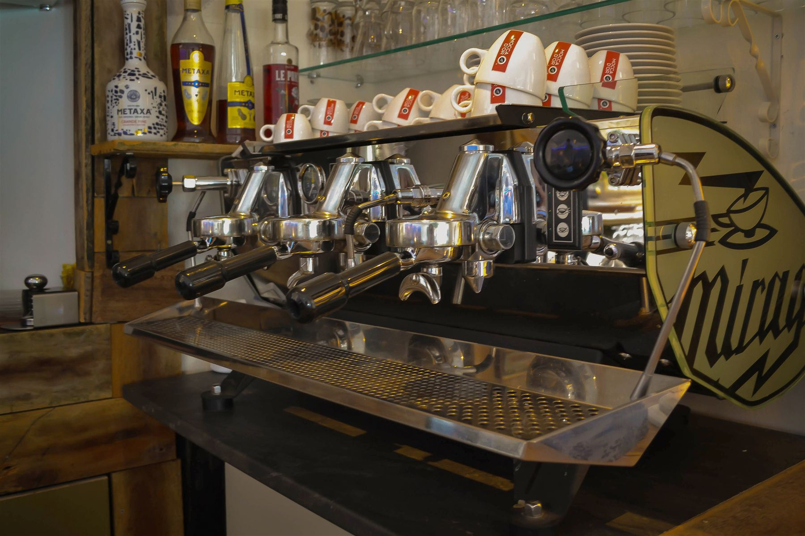

Grieks restaurant in Leusden · sinds 2005
Mykonos
Waan je zelf een avondje uit in Griekenland. Overheerlijke Griekse gerechten, lekkere wijnen en een ontspannen ambiance.
Kalós írthate
Kom thuis in de Griekse gastvrijheid
Mykonos is sinds 2005 een begrip in Leusden en omstreken. Gasten voelen zich thuis bij ons.
Je hoeft geen vliegtuig te pakken om het ultieme Griekse vakantiegevoel te ervaren. Kom gewoon naar ons: denk je aan Griekenland, dan denk je aan vele kleine gerechtjes om te proberen, een goed glas wijn en lange avonden aan tafel.
- 2005een begrip in Leusden
- Afhalenlekker thuis genieten
- Bezorgenin Leusden, wo t/m zo



Eén avond op vakantie
Je hoeft geen vliegtuig te pakken. Kom gewoon naar ons.
Afhalen & bezorgen
Lekker thuis genieten van onze gerechten
Bel van tevoren om je bestelling door te geven, dan zorgen wij ervoor dat deze op je staat te wachten.
- Afhalen
- woensdag t/m zondag
- Bezorgen in Leusden
- woensdag t/m zondag, 17:00 tot 20:00 uur (mits mogelijk)
- Minimale bestelling
- € 23,00 · bezorgkosten € 3,50
Afhalen kan van de menukaart hierboven, behalve koroni, garides, midia, thrapsalo, ornios, xyfiatis, de inktviskroon van het kindermenu en het kinderijs.
Pita's
alleen voor afhalen & bezorgen · met tzatziki, koolsalade & rauwe ui
- Pita gyros9,00
keuze uit kip- of varkensgyros
- Pita bifteki10,00
gekruid gehakt (halfom) & feta
- Pita vega7,00
met kaas, tomaat, komkommer & feta
- Pita agtarma10,00
keuze uit kip- of varkensgyros met kaas, mosterd & feta
Foto's
Een sfeerimpressie van ons restaurant


Reserveren
Schuif aan bij Mykonos
Reserveer online of bel ons op 033 432 22 75.
Reserveren voor morgen kan tot 16:00 uur.
Wanneer
- Restaurant
- woensdag t/m zondag, 's avonds
- Afhalen
- woensdag t/m zondag
- Bezorgen
- wo t/m zo, 17:00 – 20:00
Twijfel je over een datum? Bel of mail ons even.
Vacatures
Wil jij ons team versterken?
Bel naar 033 432 22 75 en vraag naar Laki, of stuur een mail naar mykonos.leusden@gmail.com.
- Medewerk(st)ers bedieningvanaf 16 jaar · dagen/uren in overleg
- Bezorgersvanaf 16 jaar · dagen/uren in overleg
- Spoelkeukendagen/uren in overleg
- Keukenhulpbereiding van salades en desserts · dagen/uren in overleg
Contact
Waar zit Mykonos?
Hamersveldseweg 263833 GP Leusden
033 432 22 75
mykonos.leusden@gmail.com Route plannen